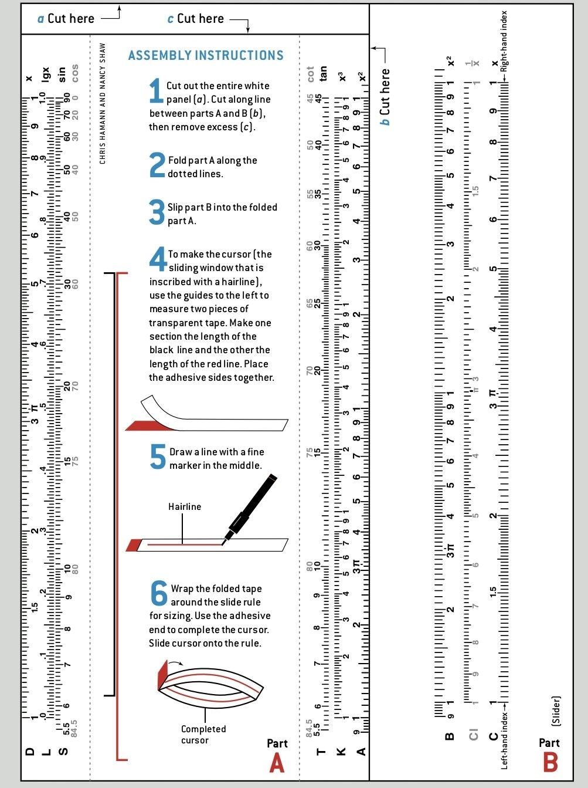

计算尺（Slide Rule）诞生于17世纪，依靠对数原理将乘除运算转化为简单的长度加法。直至20世纪70年代，它一直是工程师、科学家、航海家的必备“掌上计算机”。阿波罗登月计划中，无数关键数据曾依赖计算尺校核。即便在数字时代的今天，它仍被视作精密机械与数学智慧的结晶。
1622年，英国数学家威廉·奥特雷德（William Oughtred）将两条对数刻度并排滑动，制造出第一把圆形计算尺；之后逐步演化为经典的矩形“曼海姆尺”。其优雅、可靠、直觉化的操作，在微电子计算机普及前统治了科学工程领域三百年。
计算尺的灵魂是对数刻度。在普通直尺上，数字按等间距排列；而在计算尺上，数字的位置与其常用对数 (lg) 成正比：
对数恒等式 \(\log(a) + \log(b) = \log(a \times b)\) 意味着：
将两个数的长度首尾相接，总长度对应乘积的对数，从而直接读出乘积。
同理，减法对应除法。
标准计算尺通常包含：D尺（固定尺，主刻度）、C尺（滑尺，与D尺对数一致）、A/B尺（平方/平方根）、CI尺（倒数）、游标（辅助对齐）。乘除主要使用C、D两尺完成。
- 尺身 (Stator) —— 固定部分，通常刻有D、K、L等刻度。
- 滑尺 (Slide) —— 嵌入中间可抽动的尺，刻有C、CI、B等刻度。
- 游标 (Cursor) —— 透明带基准线的玻璃窗，用于精准对齐读数。
- 主要刻度 —— C / D 尺（核心乘除），A/B（平方/平方根），L（常用对数值），CI（倒数尺）。
✖️ 乘法运算
计算 2 × 3 = 6 示范：
- 1️⃣ 移动滑尺，将 C尺的“1” 对准 D尺上的“2”（第一个因数）。
- 2️⃣ 找到 C尺上的“3”（第二个因数）。
- 3️⃣ 游标线对齐C尺的“3”，此时游标指向D尺的数值即6（乘积）。
📌 若乘积超出量程，则使用CI倒数量或移动1(右端)以扩展计算。
➗ 除法运算
计算 6 ÷ 2 = 3 示范：
- 1️⃣ 将 C尺上的“2” (除数) 对准 D尺上的“6” (被除数)。
- 2️⃣ 读取 C尺的“1” 所对应的 D尺数值 → 3 即为商。
📐 原理：\( \log(6) - \log(2) = \log(3) \)，长度相减即得商。
计算尺将乘除转变为刻度长度相加减。下方模拟器通过“对数加法/减法”完美再现核心思想——移动滑块即时看到乘积与商的变化。
📌 平方与平方根
A尺（或B尺）是D尺的平方刻度（双周期对数）。要计算 \(3^2 = 9\) ，将游标对准D尺3，在A尺上读得9。平方根则逆用。
🔄 连续乘除 & 比例
利用CI(倒置C尺)与C尺配合，无需重新调零，进行\(a×b×c\)多步乘法，工程师常用的快速技巧。
🎓 历史花絮
- 计算尺从未被完全“淘汰”，至今仍被帆船运动员、航空背测学员使用。
- 经典品牌：Keuffel & Esser (K&E)、Pickett（曾用于阿波罗计划）、Faber-Castell。
- 一把高级计算尺可以完成三角函数、指数、对数甚至双曲函数计算。
尝试做同款！(长按下载)
